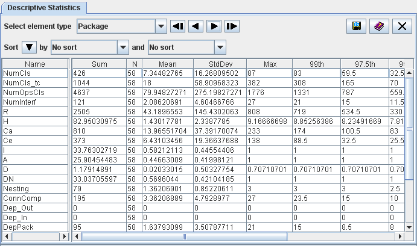

| Prev - Next - Down | SDMetrics - the UML design measurement tool |

Figure 13: Descriptive statistics view
Each row of the table represents one design metric, the columns provide the descriptive statistics (minimum, maximum, mean, standard deviation, and several percentiles). The context menu of the table links to the histogram view for the selected metric (Section 4.5 "The View 'Histograms'"), and its full definition in the measurement catalog view (Section 4.13 "The View 'Catalog'").
| Prev | Up | Next |
| Section 4.7.2 "Accepting Design Rule Violations" | Contents | Section 4.9 "The View 'Design Comparison'" |